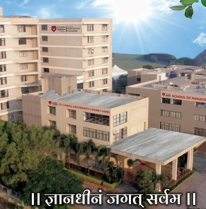
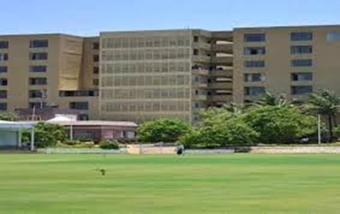
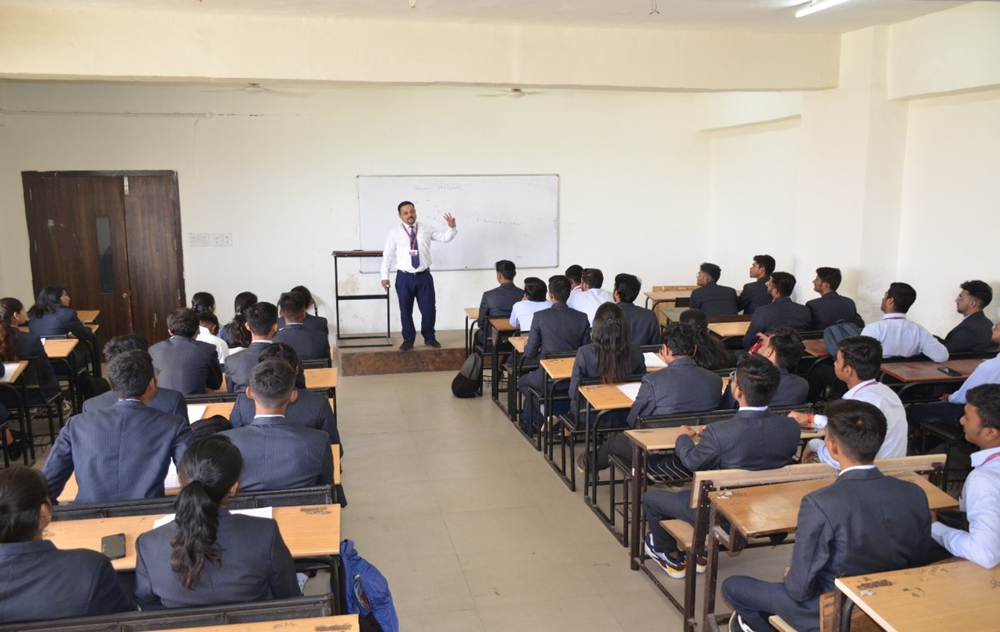

Since its inception in 1983, the DY Patil Group of Institutions has established itself as a premier educational group in India. DY Patil University Pune, founded under the Government of Maharashtra Act No.VI of 2019 and recognized by UGC, New Delhi, owes its origin to the vision and dedication of Padmashree Dr. D. Y. Patil, Founder President, a forward-thinking leader who initiated the pursuit of education in Mumbai. Maharashtra. With the guiding principle of "Knowledge is Supreme," the institution was established to deliver quality, value based and cutting- edge education. Over the years, it has evolved into one of Maharashtra's largest private educational providers, offering a diverse range of programs. Under the leadership of Dr. Vijay D Patil, President and Chancellor and Dr. Shivani Vijay Patil, Vice President and Pro-Chancellor since 2006, DY Patil Technical Campus has transformed into a university with schools dedicated to Architecture, Design, Engineering and Technology, Hospitality and Tourism Studies, Law, Management, Pharmacy, as well as Polytechnic and Agriculture.
The School of Engineering & Technology (SOET) at DY Patil University, Pune, is dedicated to nurturing the next generation of leaders in engineering, science, and technology. Comprehensive B Tech and M Tech Programs provide solid grounding in engineering principles while fostering interdisciplinary collaboration to tackle real-world challenges.
Embracing a student-centric learning ethos, curriculum encourages active engagement and the application of theoretical knowledge to practical scenarios. Students are encouraged to explore the intricacies of engineering, uncovering solutions through scientific inquiry and the application of theory. Program and branches are designed to prepare students for a wide range of roles, including designing, evaluating, developing, testing, modifying, installing, inspecting, and maintaining various products and systems. By integrating multiple disciplines, students develop holistic solutions that are both innovative and practical, equipping them with the essential skills for successful careers in engineering.
 